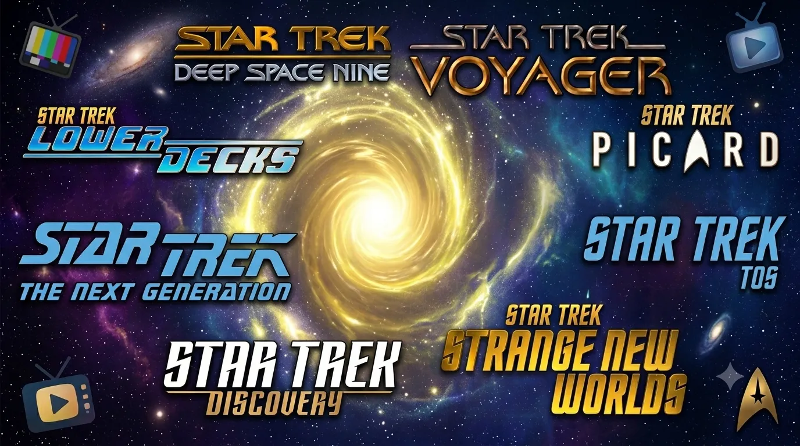

@c6reviews.
@c6reviews.
It's the eternal question about watching Star Trek. Maybe you've caught a few episodes on TV and now you want to see more. Maybe you watched a whole series and want to try a different one. Or maybe you're a long-time Trek fan and you want to introduce friends and family to the show. If you ask fans, many will have very strong opinions about your watch order, and many of those opinions will be different, often times depending on the age of the person you ask! In the worst cases, some fans may even gatekeep the experience and make watching feel like a chore rather than the delightful adventure that it should be. Feel free to ask for advice, but ultimately the decision is yours. Below, I will try to clear up some of the noise and give you my best advice that is generic enough for you to make an informed decision on your own. The most important takeaway is to enjoy the story!
Generations of Star Trek:
First Generation Trek (1966-1991) •
Second Generation Trek (1987-2005) •
Kelvin Timeline Films (2009-2016) •
Third Generation Trek (2017-present)
See the About page for more details.
General dos and don'ts:
- DO find a show that you like.
If you find yourself not interested in what you're watching, set it aside and try a different show. - DON'T stress about trying to find the perfect order to watch.
Each show can be enjoyed on its own. - but DO consider maintaining the order of two important captains' stories
You aren't going to ruin anything if you watch in a different order. But if there were any stories that would be best viewed in a certain order, it would be these two:
Captain Kirk: The Original Series ➡︎ The Animated Series ➡︎ Films #1–#6
Captain Picard: The Next Generation ➡︎ Films #7–#10 ➡︎ Picard - DON'T watch Star Trek: Enterprise first just because it comes first chronologically.
Enterprise is sort of meant to be a prequel, intended to be watched after you've seen some of the 24th-century shows (TNG, DS9, and VOY). - before you start a show or film, DO be aware in which era it takes place, and approximately when it was produced.
This is important for having context of where/when you are in the universe, and also whether the show is new or decades old.
Here's a quick overview:
- 22nd century:
- Star Trek: Enterprise (2000s)
- 23rd century (Pike/Kirk/Spock Era):
- Star Trek: Discovery Seasons 1 & 2 (late 2010s)
- Star Trek: Strange New Worlds (2020s)
- Star Trek: The Original Series (1960s)
- Star Trek: The Animated Series (1970s)
- Films #1–#6 (1979-1991)
- Alternate/Kelvin Timeline Films #11–#13 (2009-2016)
- 24th century (Picard/Sisko/Janeway Era):
- Star Trek: Section 31 straight-to-streaming film (2025)
- Star Trek: The Next Generation (1990s)
- Star Trek: Deep Space Nine (1990s)
- Star Trek: Voyager (1990s)
- Films #7–#10 (1994-2002)
- Star Trek: Lower Decks (2020s)
- Star Trek: Prodigy (2020s)
- End of 24th century / Start of 25th century:
- Star Trek: Picard (2020s)
- • • •
- 32nd century:
- Star Trek: Discovery Seasons 3–5 (2020s)
- Star Trek: Starfleet Academy (2020s)
- 22nd century:
- DON'T forget that Star Trek has fans of all ages.
If you're older, you might firmly believe that The Original Series is the paragon of Star Trek, and you might find some of the newer shows hard to watch. If you're younger, you might find shows from the 1960s or 1990s to feel a little “old-timey”, and you might find those shows hard to watch. Neither of you is “wrong”, so be kind when discussing your opinions! - DO use my mostly-spoiler-free website, C6Reviews.com, as your watch companion to learn more about shows and episodes, and to help you find links between them! 🔌
Did you watch one of the recent shows and that's what got you interested?
- If you watched Star Trek: Discovery, you could move on to Star Trek: Strange New Worlds, which continues the story of Pike and Spock. Then you could continue Spock's story after that by going back to the beginning, with Star Trek: The Original Series.
- If you watched Star Trek: Picard, now would be a great time to go back and see Jean-Luc Picard and his crew in their prime, in Star Trek: The Next Generation, or you could learn more about Seven of Nine in Star Trek: Voyager!
- If you watched Star Trek: Lower Decks, you've seen a great example of life in the 24th century. You can see more of the 24th century (and the source of many of Lower Decks' jokes) in Star Trek: The Next Generation, Star Trek: Deep Space Nine, and Star Trek: Voyager. If you like animated shows, you could check out the original, Star Trek: The Animated Series.
- If you watched Star Trek: Prodigy, you could learn more about Janeway and Chakotay in their original series, Star Trek: Voyager, or you could go back to the O.G. animated series, Star Trek: The Animated Series.
- If you watched Star Trek: Strange New Worlds, you could continue Spock's story by going back to the beginning, with Star Trek: The Original Series.
- If you watched Star Trek: Starfleet Academy, you could see The Doctor's origin story in his first series, Star Trek: Voyager.
Suggested Watch Tracks
Still looking for suggestions? If you think you might actually tackle the entire Star Trek franchise, here are a few ways you could go about it. Good luck!
(simple)
One obvious way to tackle this is just to watch everything in the order that it was released! This list gives you mostly that, but it keeps important storylines together, such as keeping the films near their related series.
(more precise)
I actually don't recommend this track. Track 1 actually keeps important storylines together, but if you really want the experience of watching things in the order they were released for some strange reason, here's a list closer to that schedule.
- The Original Series
- The Animated Series
- Films #1–#4
- The Next Generation (Seasons 1–2)
- Film #5
- The Next Generation (Seasons 3–4)
- Film #6
- The Next Generation (Season 5)
- Deep Space Nine (Season 1)
- The Next Generation (Season 6)
- Deep Space Nine (Season 2)
- The Next Generation (Season 7)
- Deep Space Nine (Season 3)
- Voyager (Season 1)
- Film #7
- Deep Space Nine (Season 4)
- Voyager (Season 2)
- Deep Space Nine (Season 5)
- Voyager (Season 3)
- Film #8
- Deep Space Nine (Season 6)
- Voyager (Season 4)
- Deep Space Nine (Season 7)
- Voyager (Season 5)
- Film #9
- Voyager (Seasons 6–7)
- Enterprise (Season 1)
- Film #10
- Enterprise (Seasons 2–4)
- Alternate/Kelvin Timeline Films #11–#13
- Discovery (Season 1)
- Short Treks (Season 1)
- Discovery (Season 2)
- Short Treks (Season 2)
- Picard (Season 1)
- Lower Decks (Season 1)
- Discovery (Season 3)
- Lower Decks (Season 2)
- Prodigy (Frist 10 episodes)
- Discovery (Season 4)
- Picard (Season 2)
- Strange New Worlds (Season 1)
- Lower Decks (Season 3)
- Prodigy (Next 10 episodes)
- Picard (Season 3)
- Strange New Worlds (Season 2)
- Lower Decks (Season 4)
- Discovery (Season 5)
- Prodigy (Season 2)
- Lower Decks (Season 5)
- Film #14
- Strange New Worlds (Season 3)
- Starfleet Academy (Season 1)
- Strange New Worlds (Season 4)
- Starfleet Academy (Season 2)
- Strange New Worlds (Season 5)
This list puts shows in a more chronological order based on the Star Trek universe, while still maintaining prequel fidelity. TNG and DS9 overlap in the timeline, so this watch list keeps things chunked into full seasons even if they aren't quite exact. VOY also overlaps DS9, but since VOY ends up being its own self-contained story on the other side of the galaxy, it is kept separate on this list.
23rd century:
- TOS 1x00: The Cage
This single episode is the original, unaired pilot for The Original Series. It features Captain Pike, and it takes place before Discovery and the rest of TOS. - Discovery (Seasons 1 & 2)
- The Original Series
- The Animated Series
- Strange New Worlds (prequel to TOS)
- Films #1–#6
- Alternate/Kelvin Timeline Films #11–#13
24th century:
- Film #14
- The Next Generation (Seasons 1–5)
- Deep Space Nine (Seasons 1–3)
- The Next Generation (Seasons 6–7)
- Film #7
- Deep Space Nine (Seasons 4–5)
- Film #8
- Deep Space Nine (Seasons 6–7)
- Film #9
- Voyager
- Film #10
- Enterprise (prequel series, 22nd century)
- Lower Decks
- Prodigy
- Picard
32nd century:
- Discovery (Seasons 3–5)
- Starfleet Academy
If you are averse to watching shows from the 1900s (ha!) and would like to intersperse your historical viewing with modern shows, this list provides a decent balance and keeps things in a sensible order.
- TOS 1x00: The Cage
This single episode is the original, unaired pilot for The Original Series. It features Captain Pike, and it takes place before Discovery and the rest of TOS. - Discovery (Seasons 1 & 2)
- The Original Series
- The Animated Series
- Strange New Worlds (prequel to TOS)
- Films #1–#6
- Alternate/Kelvin Timeline Films #11–#13
- Discovery (Seasons 3–5)
- The Next Generation
- Starfleet Academy
- Films #7–#10
- Picard
- Voyager
- Prodigy
- Deep Space Nine
- Lower Decks
- Enterprise
- Film #14